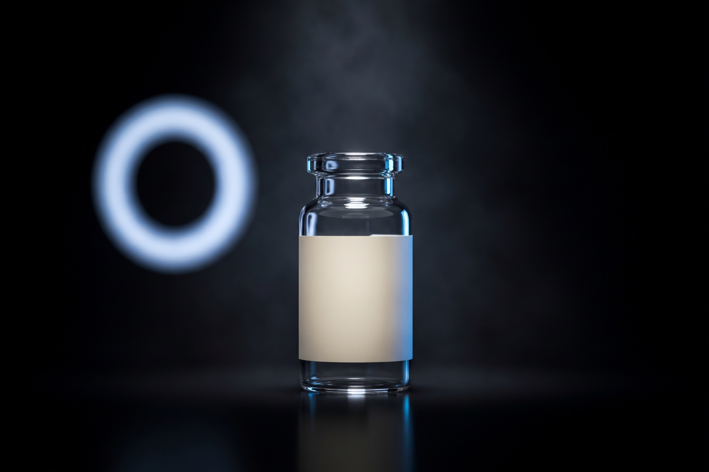

Lernen
Fragen und Antworten
100 Fragen und Antworten zu Peptide Compass und 31 Wirkstoffen, kurz beantwortet.

Hinweis
Diese Antworten ersetzen keine medizinische Beratung. Alle genannten Substanzen sind ausschließlich für Forschungszwecke (RUO) bestimmt, es gibt keine Empfehlung zur Anwendung am Menschen.
Kategorie
100 Fragen
Keine Fragen gefunden. Filter oder Suche anpassen.